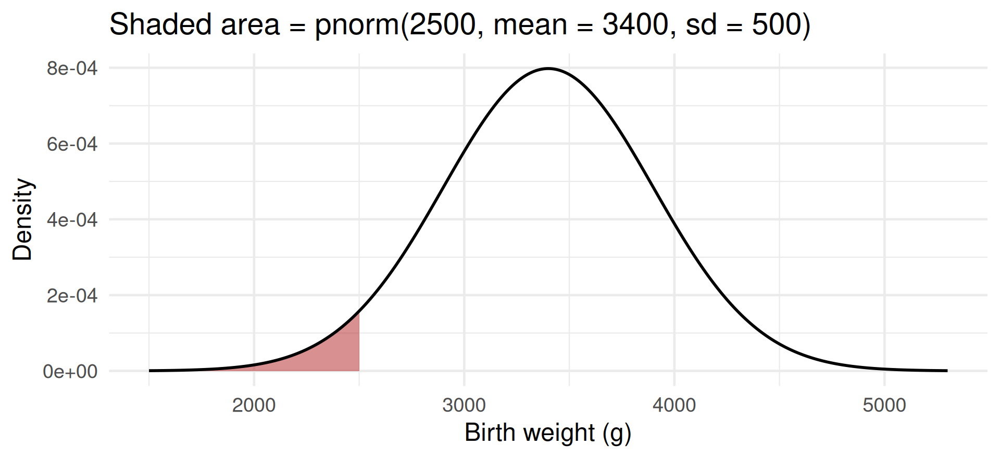
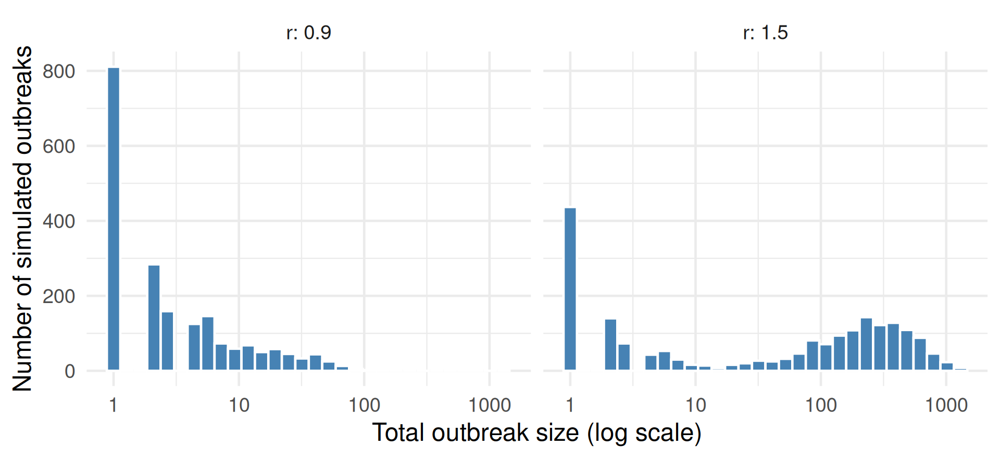
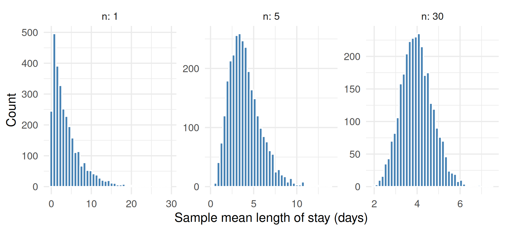

ids <- 1:10
sample(ids) [1] 10 2 9 6 7 1 3 4 8 5sample(ids) [1] 4 8 7 1 2 5 10 3 9 6GPH-GU 2182: Statistical Programming in R · Fall 2026
New York University · School of Global Public Health
2026-11-11
sample() and set.seed().d/p/q/r functions.map(), thousands of times.All of it rests on one skill: generating random numbers on purpose and reproducibly.
sample(): Shuffle a Vectorsample() returns a random permutation.set.seed(): The Same Randomness Every Time [1] 9 1 8 5 6 10 3 4 2 7 [1] 9 1 8 5 6 10 3 4 2 7[1] 1068 1167 1129 1162 1043Error in `sample.int()`:
! cannot take a sample larger than the population when 'replace = FALSE'replace = FALSE: each element can be drawn at most once.[1] "A" "O" "A" "B" "A" "O" "O" "B" [1] 2 3 3 1 5 5 2 6 6 2replace = TRUE puts each draw back: repeats are allowed.prob =blood
A AB B O
0.402 0.045 0.109 0.444 prob gives each value its chance of being drawn. [1] "drug" "drug" "placebo" "placebo" "drug" "drug" "placebo"
[8] "drug" "placebo" "drug" "placebo" "placebo"arm
drug placebo
6 6 sample(c("drug", "placebo"), 12, replace = TRUE) flips a coin per person: arms can end up 8 and 4.patient_ids twice without a seed, then twice after set.seed(10). What changes?"drug", 8 "placebo".clinics for a site audit (no repeats).prob =; compare the simulated share with 0.18.set.seed() at the top of each chunk.replace = TRUE only when repeats make sense.table().| Prefix | Returns | Normal example |
|---|---|---|
d |
density (or probability of exactly x) | dnorm(x, mean, sd) |
p |
cumulative probability \(P(X \le x)\) | pnorm(q, mean, sd) |
q |
quantile: the x with \(P(X \le x) = p\) | qnorm(p, mean, sd) |
r |
random draws | rnorm(n, mean, sd) |
Swap the suffix for other distributions: binom, pois, exp, and many more.
pnorm()Birth weight is roughly normal with mean 3,400 g and SD 500 g.
[1] 0.03593032[1] 0.1150697[1] 0.1150697pnorm() gives the area to the left; subtract from 1 for the area to the right.pnorm() as an Areabw <- tibble(weight = seq(1500, 5300, by = 10),
density = dnorm(weight, mean = 3400, sd = 500))
ggplot(bw, aes(weight, density)) +
geom_area(data = filter(bw, weight <= 2500), fill = "firebrick", alpha = 0.5) +
geom_line(linewidth = 1) +
labs(x = "Birth weight (g)", y = "Density",
title = "Shaded area = pnorm(2500, mean = 3400, sd = 500)")pnorm() as an Area
qnorm()[1] 2759.224[1] 1.959964[1] 0.1p turns a value into a probability; q turns a probability back into a value.mean and sd, R uses the standard normal (0 and 1).rnorm()[1] 0.0364[1] 0.03593032TRUEs: an estimated probability.Twenty adults, each vaccinated with probability 0.6, independently:
[1] 0.1797058[1] 0.874401[1] 0.125599An emergency room averages 6 arrivals per hour:
[1] 0.1606231[1] 0.08392402[1] 4 5 6 9 4 9 10 7lambda.| Distribution | Typical public health use | R suffix |
|---|---|---|
| Normal | blood pressure, birth weight, height | norm |
| Binomial | number vaccinated out of n people | binom |
| Poisson | arrivals per hour, cases per week | pois |
| Exponential | waiting time, length of hospital stay | exp |
rnorm() and compare the simulated share ≥ 140 with your answer.p for probabilities, q for cutoffs.1 - pbinom(k - 1, ...).r call you want to reproduce.map_*() (Week 9).Tip
The share of simulated runs where something happens is your estimated probability. More runs, better estimate.
Ten swabs share one test; the pool is positive if anyone is infected (prevalence 5%).
[1] 0.3800 0.4210 0.3994 0.3998Each case infects a Poisson number of new cases, with mean r (the reproduction number):
for loop (Week 8): each generation depends on the previous one.n_gen generations.[1] 1[1] 18[1] 701[1] 344r, very different outbreaks: chance dominates while cases are few.# A tibble: 2 × 4
r mean_size p_small p_large
<dbl> <dbl> <dbl> <dbl>
1 0.9 6.90 0.732 0.0005
2 1.5 176. 0.362 0.466 
An ER averages 6 arrivals per hour and can handle 9 per hour.
surge_hours(n_hours = 8, rate = 6, capacity = 9): simulate one shift with rpois() and return the number of hours with arrivals above capacity.set.seed(2182), run 5,000 shifts with map_dbl().1 - ppois(9, 6)^8 and 8 * (1 - ppois(9, 6)).map_dbl() repeats it.TRUEs is a probability.What does the mean of n stays look like, across many samples?
# A tibble: 3 × 4
n mean_xbar sd_xbar theory_sd
<dbl> <dbl> <dbl> <dbl>
1 1 3.95 3.88 4
2 5 4.00 1.83 1.79
3 30 3.99 0.734 0.730
Asked to “estimate the standard error of the mean length of stay for n = 30 by simulation,” an AI wrote:
[1] 0It runs, it is reproducible, and the comment sounds responsible. Ship it?
Audit findings:
set.seed(123) runs inside the function, so every call restarts the same random sequence.Important
Set the seed once, at the top, never inside a function you call repeatedly.
lm() and glm().broom.Questions? Office hours are listed on the syllabus page, or email anytime.